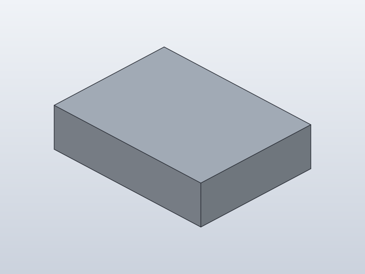
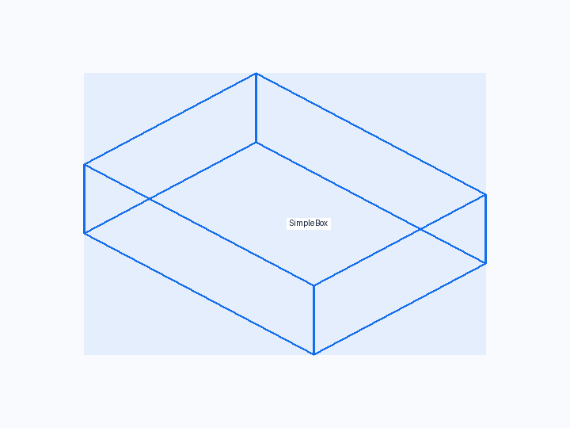
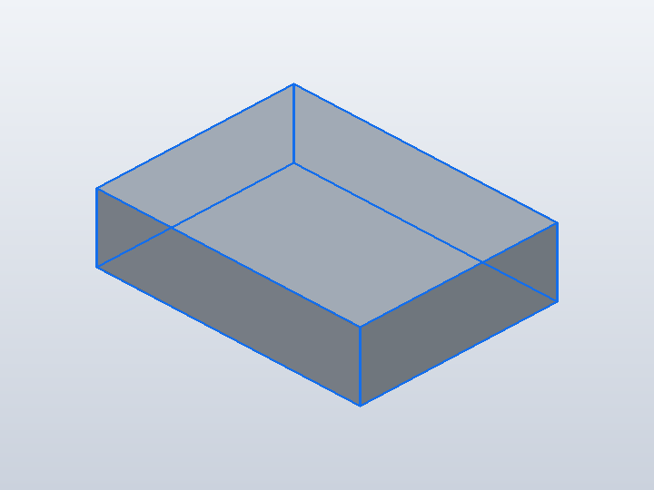
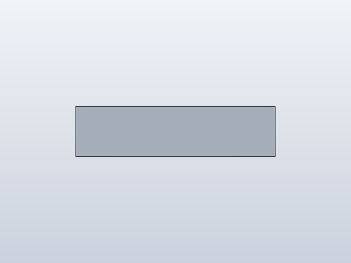
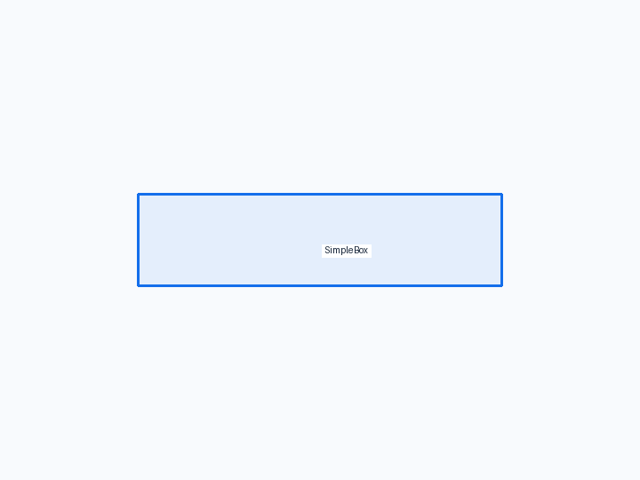
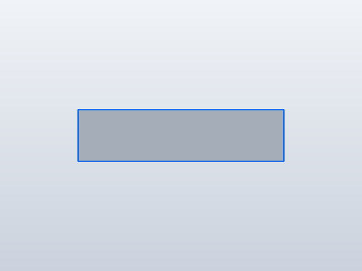
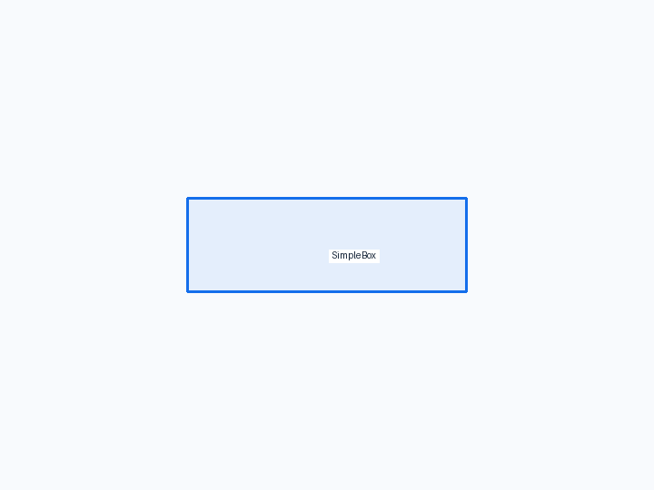
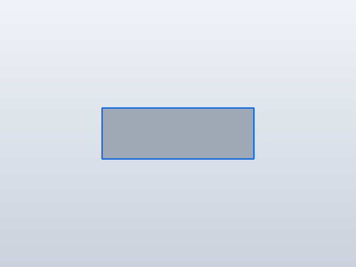

← Qualification / Parameterized Box
Forge qualification case
PASSQ1 · Q2 · Q3 · Q4 · Q5 N/R · Q6
Parameterized Box

1. Test setup

Test goal
Establish the smallest model/parameter contract: three public Python fields create one editable native box.
Pass criteria
One rectangular solid with the requested 40 x 30 x 10 mm dimensions and an error-free timeline.
2. Implementation under test
Fixture source
"""Smallest SCPF regression example: one parameterized, editable Box."""
class SimpleBox:
length = 40.0
width = 30.0
height = 10.0
def build(self):
return Box(self.length, self.width, self.height)
SimpleBox()
Public Forge API used
class fields -> Parameter; Box(length, width, height); build()
Forge model represented by this fixture
One root Shape with symbolic length, width and height; no occurrence or assembly layer.
3. Generated SolidCraft relationship
parameters.add for the public dimensions, followed by the native sketch/extrude commands used for Box.
Show generated relationship / command details
parameters.add
parameters.add
parameters.add
sketch.create
sketch.rectangle.two_point
sketch.finish
solid.extrude4. Machine verification
Baseline · 1 bodies · measurements.json
Parameters
| Name | Value |
|---|---|
length | 40.0 |
width | 30.0 |
height | 10.0 |
Bodies
| Body | BBox min | BBox max |
|---|---|---|
| SimpleBox | [-20, -15, 0] | [20, 15, 10] |
Semantic validation
| Status | Level | Check | Expected | Actual |
|---|---|---|---|---|
| PASS | Q4 | declared target geometry | [{"label": "SimpleBox", "min": [-20, -15, 0], "max": [20, 15, 10]}] | [{"min": [-20.0, -15.0, 0.0], "max": [20.0, 15.0, 10.0]}] |
| PASS | Q4 | one body | 1 | 1 |
| PASS | Q4 | 40x30x10 bounds | {"min": [-20, -15, 0], "max": [20, 15, 10]} | {"max": [20.0, 15.0, 10.0], "min": [-20.0, -15.0, 0.0]} |
| PASS | Q4 | parameters | {"length": 40.0, "width": 30.0, "height": 10.0} | {"length": 40.0, "width": 30.0, "height": 10.0} |
5. Visual verification
Iso
Current SolidCraft iso view

Expected geometry in the same iso view

Expected geometry over the actual iso view
Additional front/right views
Front

Current SolidCraft front view

Expected geometry in the same front view

Expected geometry over the actual front view
Right
Current SolidCraft right view

Expected geometry in the same right view

Expected geometry over the actual right view
6. Evidence and references
Raw evidence
Show generated files and measurements
- Fixture source
- Generated command JSON
- results.json
- measurements.json
- joint-inspect.json
- model.sc
- model.step
- qualification-result.json
- validation.json
- visual-validation.json
- camera-front.json
- camera-iso.json
- camera-right.json
- Native snapshot: model.png
- Native snapshot: model-front.png
- Native snapshot: goal-front.png
- Native snapshot: overlay-front.png
- Native snapshot: visual-diff-front.png
- Native snapshot: model-right.png
- Native snapshot: goal-right.png
- Native snapshot: overlay-right.png
- Native snapshot: visual-diff-right.png
- Native snapshot: model-iso.png
- Native snapshot: goal-iso.png
- Native snapshot: overlay-iso.png
- Native snapshot: visual-diff-iso.png


Reference models
These comparisons clarify concepts; Forge does not promise API compatibility with them.
- OpenSCAD: cube([40,30,10]) is the constructive-geometry baseline; Forge differs by preserving editable SolidCraft history.